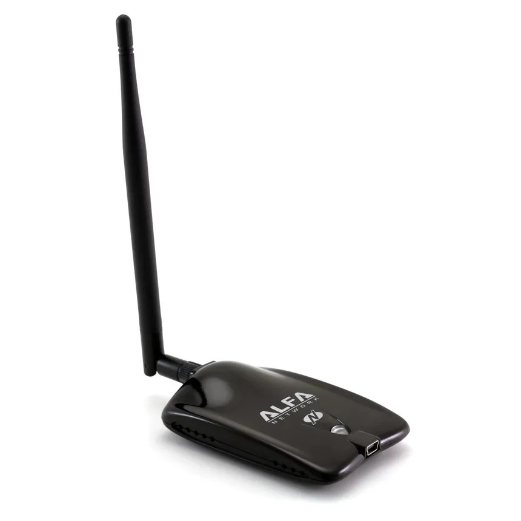

DATE PUBLISHED: 02/01/2024 17:08 P.M
LAST MODIFIED: 02/05/2024 03:08 A.M
INTRODUCTION TO WIRELESS SIGNAL BASED PROCESSING
All wireless (Wireless-Fidelity) capable clients within the vicinity of other operationally similar clients have the capacity to transmit and receive data via "Radio Communications". These type of communications are possible due to the specific hardware and firmware constructs loaded to the devices motherboard/SOC (System On a Chip) itself. Specific options include: RX (Receive), TX (Transmit) Wireless Network Interface cards/Wireless attached device antenna. These functions enable such devices to transport radio waves across space as a time-varying electrical signal to the receiving client on the other end of the half-duplex communication channel. Signals transmitted to a receving device carry what is known as a "modulation signal". This specific type of wireless signal can be in the following forms:
Audio based signaling representing voice data.
A video based signal representing the bits of an image transported across a network.
A digital signal representing digital data from a remote computer system.
The sending device (TX) utilizes an electronic device tuned at a predetermined radio frequency that is usually enforced by specific "rules" and regulatory standards to generate an electromagnetic signal for transmission. This newly generated signal (wave) is known as the "carrier wave", these short-to-long length modulated/amplified radio waves "carry" information across the wireless medium to the intended station (STA).
Once the designated source signal is ready to be sent across the wireless medium to the remote STA, it is sent out of the primary interface. Before the radio wave is transmitted, an internal device component known as an Oscillator must create an alternating current (AC) that pushes electrons back and forth for an extent of time, thus creating external electric and magnetic fields which in turn radiate the energy away from the primary antenna (TX) in the form of radio waves.
Upon successful transmission to the remote wireless STA intended as the primary recipient, the electrons in the receiver antenna (RX) are also pushed back and forth. This internal process creates a similar yet weaker source signal replica of the recently transmitted radio wave. The voltage is then applied to the devices radio receiver which utilizes an internal digital band-pass filter to extract a subset of wireless frequencies containing the source signal information encoded within the currently processed carrier wave. In turn the carrier wave (signal) is amplified to increase its signal strength before being digitally manipulated for a user-specific application. Applications include, but are not limited to the following:
Data to be processed within a "RadioTap Header" encapsulated in an 802.11 Beacon Frame.
Data pertaining to a wireless networks 4-way handshake.
Device specific information, such as SSID, Channel, Encryption Cipher Suite, Frequency Modulation (FM) type, etc.
Such "oscillated electro-magnetic radiated" radio signals contain valuable information in regards to Information Enumeration against remote networks in the form of an IEEE 802.11 Beacon Frame.
INFORMATION ENUMERATION: IEEE 802.11 BEACON FRAME BASICS
A Beacon Frame is a management frame (0x00) within the bounds of the IEEE's 802.11 wireless protocol standard responsible for transmitting intermittent device specific data relating to the presence of advertised Service Set parameters. These mandatory/optional parameters enable an unassociated and unauthenticated Wireless Supplicant to find, monitor, and connect to ANY remote managed Authenticator (Access Point) within the immediate area. The data returned is processed as an encapsulated wireless frame containing a RadioTap header bitmask, frame type specific details, management, control and/or other data related operations, etc.
ADVANCED TECHNICAL INFORMATION REGARDING THE 802.11 BEACON FRAME FORMAT
Frame Control Field - 16 bit (2 byte) field comprising of a subset of layers that store information in relation to the frame.
FRAME CONTROL FIELD BIT LISTING
Protocol Version (2 bits):
-
These 2 bits indicate the current version of the 802.11 wireless protocol. Typically set to 0x00, as most modern networks use version 0.
BITMASK EXTRACTION:
0000 0000 0000 0011 = 0x03 (bits 0, 1)
Type (2 bits):
-
Indicates the wireless frame type (0x00 = FRAME_TYPE_MANAGEMENT, 0x01 = FRAME_TYPE_CONTROL, 0x02 = FRAME_TYPE_DATA)
BITMASK EXTRACTION:
0000 0000 0000 1100 = 0x0C (bits 2, 3)
Subtype (4 bits):
-
Represents the frames current subtype. Provides further information in relation to the frame depending on the frame type itself.
BITMASK EXTRACTION:
0000 0000 1111 0000 = 0xF0 (bits 4, 5, 6, 7)
To DS (1 bit):
-
Determines if the frame is destined for the DS (Distribution System). The DS is known as the Access Point (AP) within the context of wireless networking.
BITMASK EXTRACTION:
0000 0001 0000 0000 = 0x100 (bit 8)
More Fragments (1 bit):
-
Specifies if there are more fragments of a divided packet encapsulated within a frame following the current one.
BITMASK EXTRACTION:
0000 0010 0000 0000 = 0x200 (bit 9)
Retry (1 bit):
-
Determines if this frame is a retransmission of an earlier frame.
BITMASK EXTRACTION:
0000 0100 0000 0000 = 0x400 (bit 10)
Power Management (1 bit):
-
Indicates the power management state of a sender after the completion of a successful frame exchange.
BITMASK EXTRACTION:
0000 1000 0000 0000 = 0x800 (bit 11)
More Data (1 bit):
-
Represents if more frames within the data stream are buffered with more data or not.
BITMASK EXTRACTION:
0001 0000 0000 0000 = 0x1000 (bit 12)
WEP (Wired Equivalent Privacy, 1 bit):
-
States which Encryption Cipher is being used for secure transmission of the frame body across the wireless medium.
BITMASK EXTRACTION:
0010 0000 0000 0000 = 0x2000 (bit 13)
Order (1 bit):
-
Determines whether or not a frame needs to be strictly ordered/processed.
BITMASK EXTRACTION:
0100 0000 0000 0000 = 0x4000 (bit 14)
Duration - 16 bit (2 byte) field representing multiple values with relations to the wireless device amongst information regarding round-trip medium access time.
Association ID (AID, 12 bits):
-
A unique ID assigned to Wireless Supplicants when they associate with an Authenticator (Wireless AP) in infrastructure/master mode.
BITMASK EXTRACTION:
0000 1111 1111 1111 = 0xFFF (bits 0, 11)
Duration (4 bits):
-
Indicates the direction in which the wireless medium will be occupied. This includes the transmission time of the Beacon Frame and any additional frames that may follow.
BITMASK EXTRACTION:
1111 0000 0000 0000 = 0xF000 (bits 2, 3)
DA (Destination Address) - Represents the receivers PHY MAC address (6 byte - 48 bit).
SA (Source Address) - This is the PHY MAC address (6 byte - 48 bit) of the Authenticator (AP)
BSSID (Basic Service Set ID) - The PHY MAC address (6 byte - 48 bit) of the Authenticator (AP)
Sequence Control Number - A 16 bit field with 2 sub fields: The Fragment Number and Sequence Number respectively.
Fragment Number (4 bits):
-
The primary function of the FN allows the receiving wireless STA to reassemble fragmented frames and/or packets that are being transmitted across the wireless medium.
BITMASK EXTRACTION:
0000 0000 0000 1111 = 0xF (bits 0, 3)
Sequence Number (12 bits):
-
This unique number is applied to each frame in order to keep a "record" of the proper frame transmission order when being processed.
BITMASK EXTRACTION:
1111 1111 1111 0000 = 0xFFF0 (bits 4, 15)
Frame Body - Within this field lies the usually encrypted payload of the frame in transmission itself. The exact structure/layout of the wireless frame body varies upon several factors dependent on the frame type and subtype themselves.
FCS (Frame Check Sequence) - This 32 bit field indicates whether or not the frame in transmission may or may not have been corrupted. The FCS utilizes a CRC (Cyclic Redundancy Check) based algorithm to produce a hashed variant which relies on multiple constructs within the wireless frame for integrity purposes.
Timestamp - Text placeholder, text placeholder, text placeholder
Beacon Interval - Text placeholder, text placeholder, text placeholder
Capability Info - Text placeholder, text placeholder, text placeholder
SSID (Service Set ID) - Text placeholder, text placeholder, text placeholder
(Frequency Hopping) ParameterSet - Text placeholder, text placeholder, text placeholder
DS (Distribution System) ParameterSet - Text placeholder, text placeholder, text placeholder
CF (Contention Free) ParameterSet - Text placeholder, text placeholder, text placeholder
IBSS (Independent Basic Service Set) ParameterSet - Text placeholder, text placeholder, text placeholder
TIM (Traffic Indication Map) - Text placeholder, text placeholder, text placeholder
Country Info - Text placeholder, text placeholder, text placeholder
Power Contest - Text placeholder, text placeholder, text placeholder
Channel Switch - Text placeholder, text placeholder, text placeholder
Quiet - Text placeholder, text placeholder, text placeholder
TPC (Transmit Power Control) Report - Text placeholder, text placeholder, text placeholder
ERP (Extended Rate PHY) - Text placeholder, text placeholder, text placeholder
ER (Extended Rates) - Text placeholder, text placeholder, text placeholder
RSN (Robust Security Network) - Text placeholder, text placeholder, text placeholder
INFORMATION ENUMERATION II: CAPTURING WIRELESS TRAFFIC WITH TCPDUMP
Now that some basic relations between the wireless spectrum and the data contained therein are apparent, we shall now see how such information can be manipulated to suit our needs of wireless communications reconnaissance. IEEE 802.11 Beacon Frames are but a small part of the wireless medium, there are multiple other protocols being transported through signal-to-air modulation as well: however the Beacon Frame is what will persist alongside our current interests.
Let's get started.
System binary applications/hardware used:
-
TCPDUMP - A familiar yet modern retrospect on user-level packet capture software tooling and analysis.
-
ANY terminal based user interface/emulator, TTY (Teletype) device, console prompt, etc.
-
A Network Interface Card (NIC) that supports the following mode:
-

-
MONITOR MODE - MM is a subset of an available connection based wireless feature that enables passive remote traffic monitoring/analysis capabilities. This enables such an adapter to receive traffic indicated for other devices from and to the DS (Distribution System) or Base Station (AP) whilst being unauthenicated and unassociated itself.
-